## load the new_metadata data frame into your environment from a .RData object
load("data/new_metadata.RData")Session 3: Data Visulation
Data visualization in R
In this session, we will explore the ways to create, manipulate, and export variety of plots such as histograms, boxplots, line plots, and scatter plots.
R is one of the most versatile platform for data visualization and it can create almost any type of graph. Although there are several ways to create graphs in R, we will particularly focus on “ggplot2” package which is arguably one of the most used package in R.
For this lesson, you will need the `new_metadata` data frame. Load it into your environment as follows:
Next, let’s check if it was successfully loaded into the environment:
# this data frame should have 12 rows and 5 columns
View(new_metadata)When we are working with large sets of numbers it can be useful to display that information graphically to gain more insight. In this lesson we will be plotting with the popular Bioconductor package [`ggplot2`](http://docs.ggplot2.org/).
The `ggplot2` syntax takes some getting used to, but once you get it, you will find it’s extremely powerful and flexible. We will start with drawing a simple x-y scatterplot of `samplemeans` versus `age_in_days` from the `new_metadata` data frame. Please note that `ggplot2` expects a dataframe or a tibble (the Tidyverse version of a dataframe) as input.
Let’s start by loading the `ggplot2` library:
library(ggplot2)The `ggplot()` function is used to **initialize the basic graph structure**, then we add to it. The basic idea is that you specify different parts of the plot using additional functions one after the other and combine them into a “code chunk” using the `+` operator; the functions in the resulting code chunk are called layers.
Let’s start:
load("data/new_metadata.RData")
ggplot(new_metadata) # what happens? 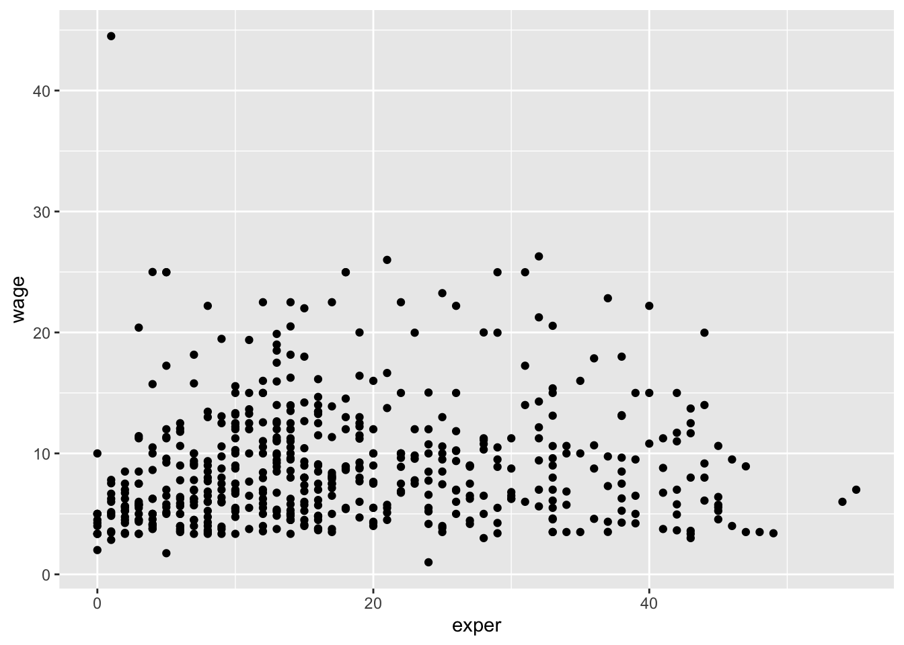
You get an blank plot, because you need to **specify additional layers** using the `+` operator.
The **geom (geometric) object** is the layer that specifies what kind of plot we want to draw. A plot **must have at least one `geom`**; there is no upper limit. Examples include:
- points (`geom_point`, `geom_jitter` for scatter plots, dot plots, etc)
- lines (`geom_line`, for time series, trend lines, etc)
- boxplot (`geom_boxplot`, for, well, boxplots!)
Let’s add a “geom” layer to our plot using the `+` operator, and since we want a scatter plot so we will use `geom_point()`.
#ggplot(new_metadata) +
# geom_point() # note what happens hereWhy do we get an error? Is the error message easy to decipher?
We get an error because each type of `geom` usually has a **required set of aesthetics** to be set. “Aesthetics” are set with the aes() function and can be set either nested within `geom_point()` (applies only to that layer) or within `ggplot()` (applies to the whole plot).
The `aes()` function has many different arguments, and all of those arguments take columns from the original data frame as input. It can be used to specify many plot elements including the following:
- position (i.e., on the x and y axes)
- color (“outside” color)
- fill (“inside” color)
- shape (of points)
- linetype
- size
To start, we will specify x- and y-axis since `geom_point` requires the most basic information about a scatterplot, i.e. what you want to plot on the x and y axes. All of the other plot elements mentioned above are optional.
ggplot(new_metadata) +
geom_point(aes(x = age_in_days, y= samplemeans))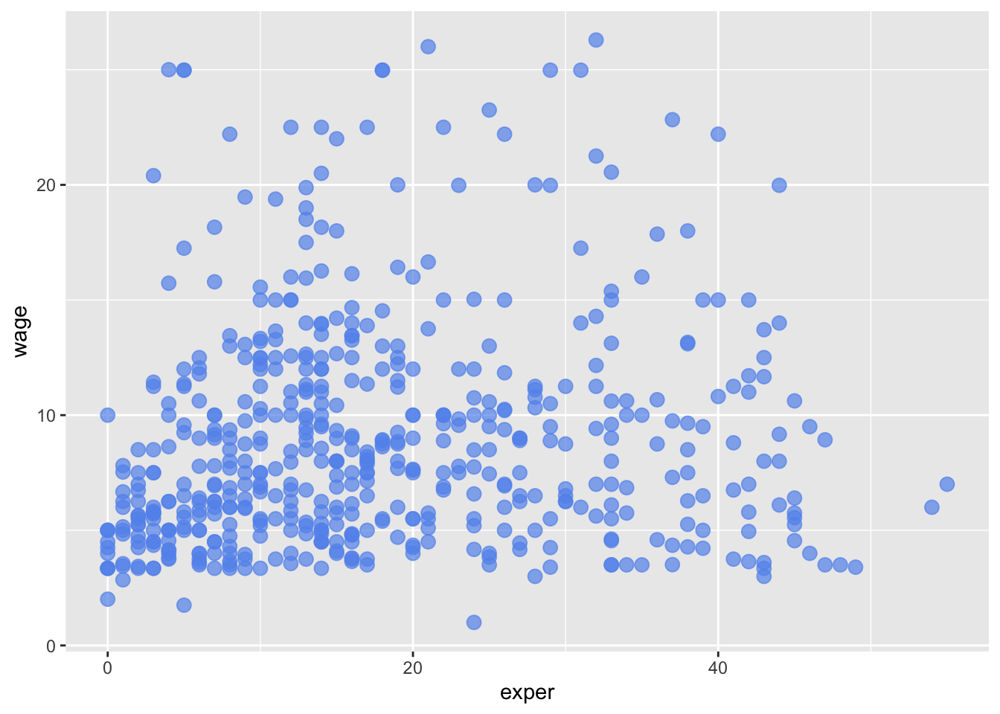
Now that we have the required aesthetics, let’s add some extras like color to the plot. We can **`color` the points on the plot based on the genotype column** within `aes()`. You will notice that there are a default set of colors that will be used so we do not have to specify. Note that the legend has been conveniently plotted for us.
ggplot(new_metadata) +
geom_point(aes(x = age_in_days, y= samplemeans, color = genotype)) 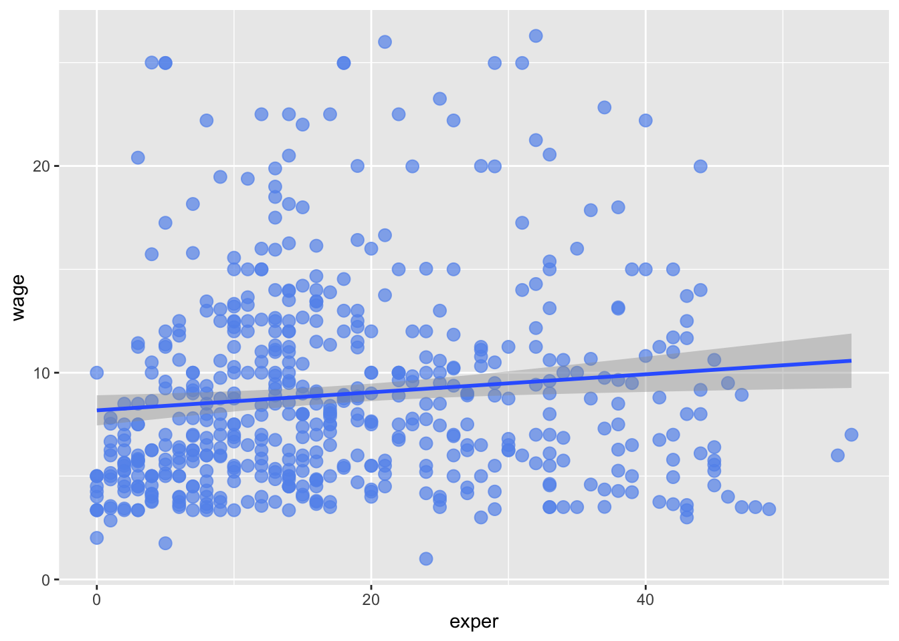
Let’s try to have both **celltype and genotype represented on the plot**. To do this we can assign the `shape` argument in `aes()` the celltype column, so that each celltype is plotted with a different shaped data point.
ggplot(new_metadata) +
geom_point(aes(x = age_in_days, y= samplemeans, color = genotype,
shape=celltype)) 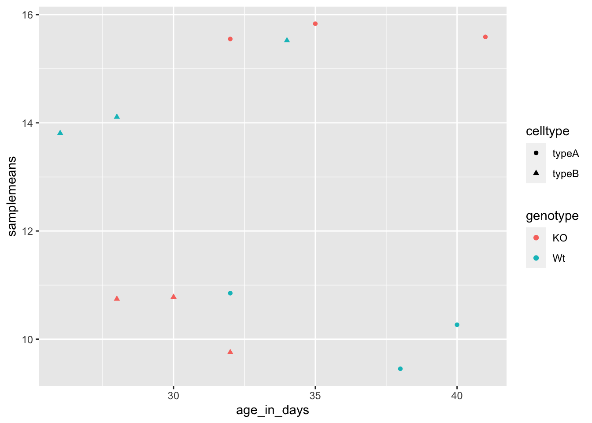
The data points are quite small. We can adjust the **size of the data points** within the `geom_point()` layer, but it should **not be within `aes()`** since we are not mapping it to a column in the input data frame, instead we are just specifying a number.
ggplot(new_metadata) +
geom_point(aes(x = age_in_days, y= samplemeans, color = genotype,
shape=celltype), size=2.25) 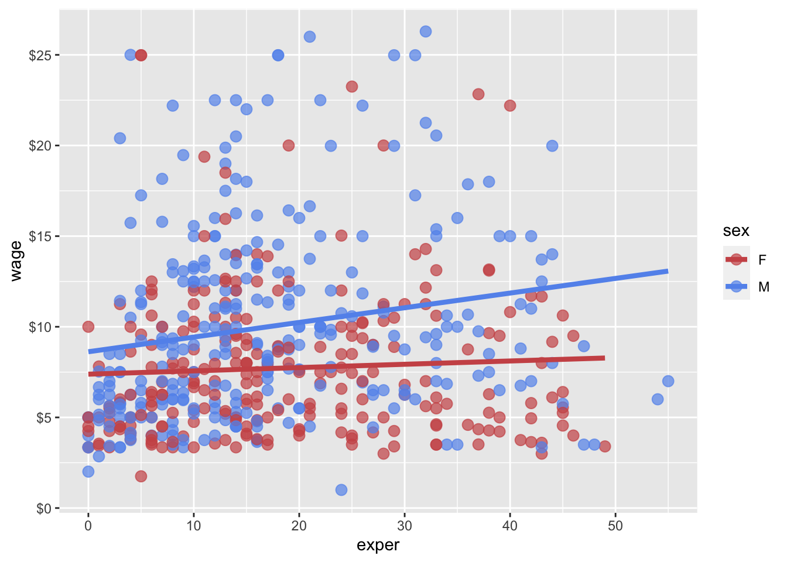
The labels on the x- and y-axis are also quite small and hard to read. To change their size, we need to add an additional **theme layer**. The ggplot2 `theme` system handles non-data plot elements such as:
- Axis label aesthetics
- Plot background
- Facet label backround
- Legend appearance
There are built-in themes we can use (i.e. `theme_bw()`) that mostly change the background/foreground colours, by adding it as additional layer. Or we can adjust specific elements of the current default theme by adding the `theme()` layer and passing in arguments for the things we wish to change. Or we can use both.
Let’s add a layer `theme_bw()`.
ggplot(new_metadata) +
geom_point(aes(x = age_in_days, y= samplemeans, color = genotype,
shape=celltype), size=3.0) +
theme_bw() 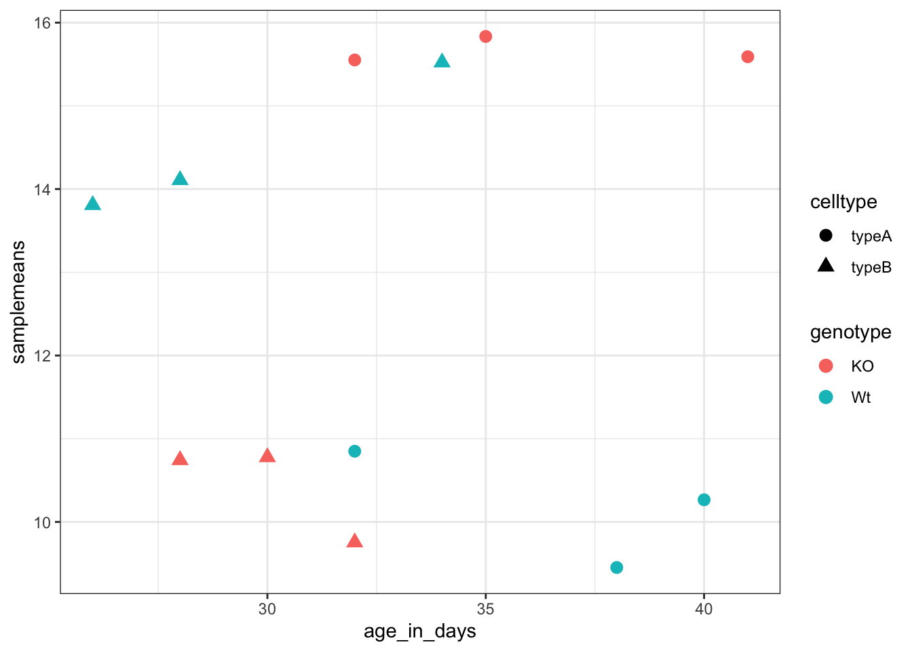
Do the axis labels or the tick labels get any larger by changing themes?
No, they don’t. But, we can add arguments using `theme()` to change the size of axis labels ourselves. Since we will be adding this layer “on top”, or after `theme_bw()`, any features we change will override what is set by the `theme_bw()` layer.
Let’s **increase the size of both the axes titles to be 1.5 times the default size.** When modifying the size of text the `rel()` function is commonly used to specify a change relative to the default.
ggplot(new_metadata) +
geom_point(aes(x = age_in_days, y= samplemeans, color = genotype,
shape=celltype), size=2.25) +
theme_bw() +
theme(axis.title = element_text(size=rel(1.5))) 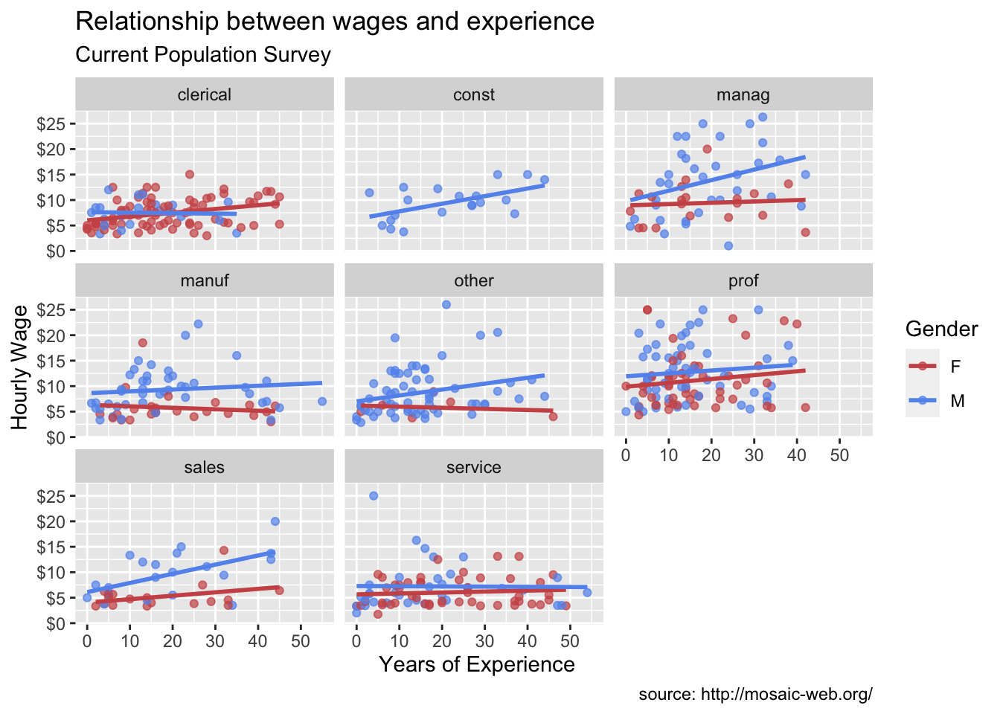
We can also make a boxplot of the data:
## Histogram
To plot a histogram we require another type of geometric object called `geom_histogram`, which requires a statistical transformation. Some plot types (such as scatterplots) do not require transformations, each point is plotted at x and y coordinates equal to the original value. Other plots, such as boxplots, histograms, prediction lines etc. need to be transformed. Usually these objects have has a default statistic for the transformation, but that can be changed via the `stat_bin` argument.
Let’s plot a histogram of sample mean expression in our data:
ggplot(new_metadata) +
geom_histogram(aes(x = samplemeans))`stat_bin()` using `bins = 30`. Pick better value with `binwidth`.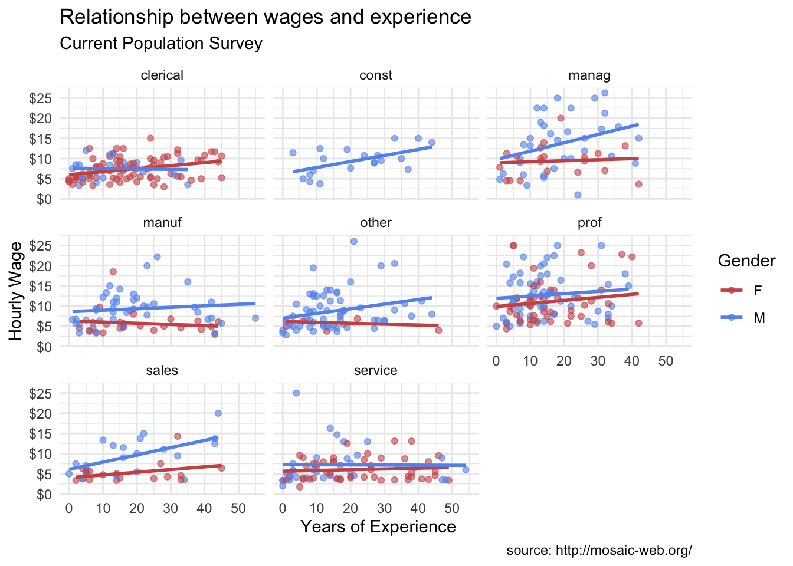
You will notice that even though the histogram is plotted, R gives a warning message \``stat_bin()` using `bins = 30`. Pick better value with `binwidth`.\` These are the transformations we discussed. Apparently the default is not good enough.
Let’s change the binwidth values. How does the plot differ?
ggplot(new_metadata) +
geom_histogram(aes(x = samplemeans), stat = "bin", binwidth=0.8)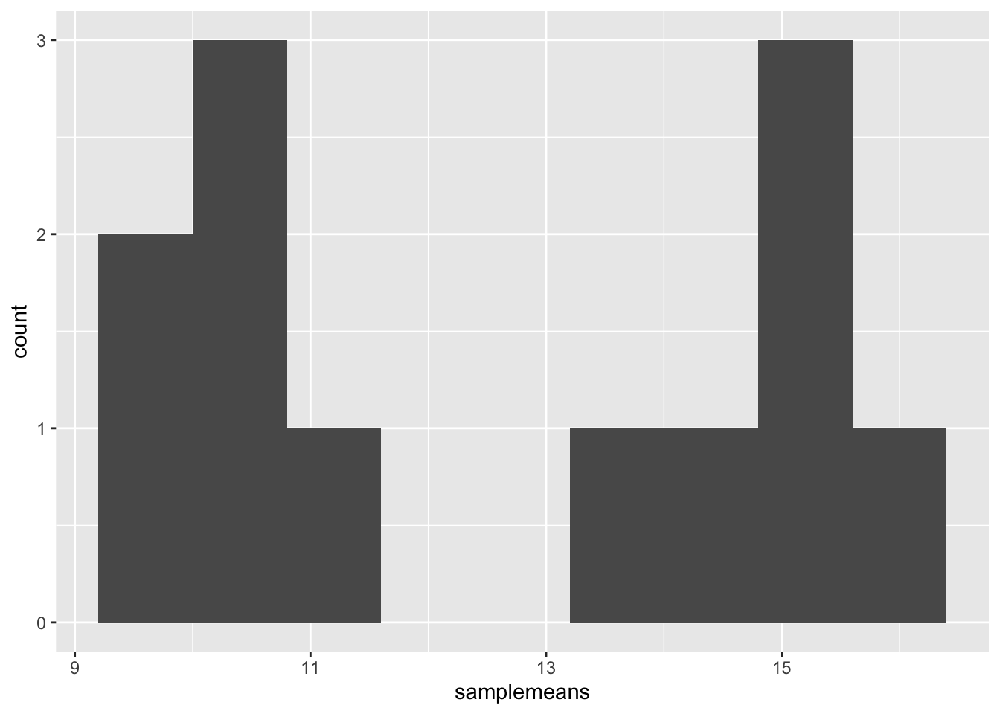
> *NOTE:* You can use the `example(“geom_point”)` function here to explore a multitude of different aesthetics and layers that can be added to your plot. As you scroll through the different plots, take note of how the code is modified. You can use this with any of the different geometric object layers available in ggplot2 to learn how you can easily modify your plots!
> *NOTE:* RStudio provide this very [useful cheatsheet](../cheatsheets/data-visualization-2.1.pdf) for plotting using `ggplot2`. Different example plots are provided and the associated code (i.e which `geom` or `theme` to use in the appropriate situation.) We also encourage you to persuse through this useful [online reference](https://ggplot2.tidyverse.org/reference/) for working with ggplot2.
**Exercise 1: Themeing**
Let’s return to our scatterplot:
ggplot(new_metadata) +
geom_point(aes(x = age_in_days, y= samplemeans, color = genotype,
shape=celltype), size=2.25) +
theme_bw() +
theme(axis.title = element_text(size=rel(1.5))) 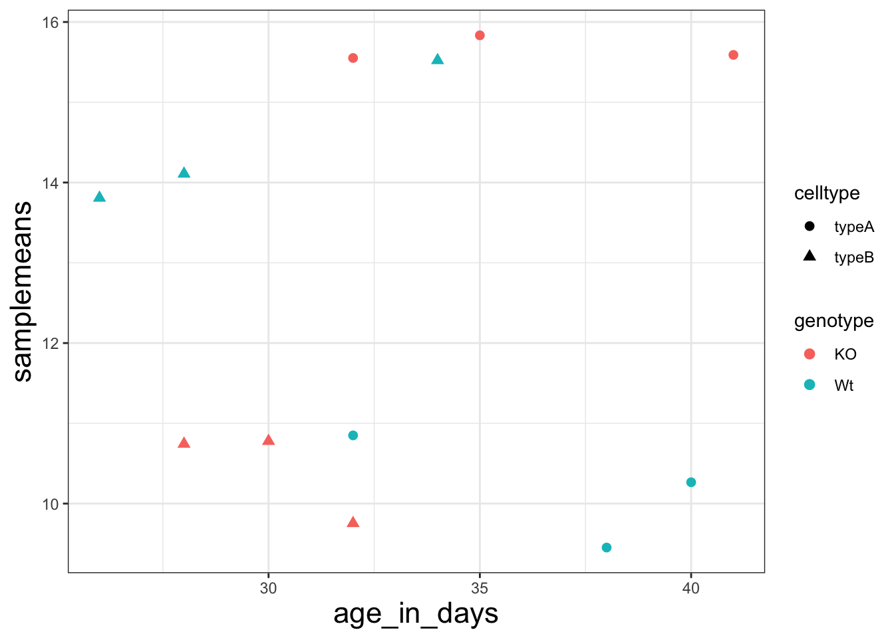
Solution
ggplot(new_metadata) +
geom_boxplot(aes(x = genotype, y = samplemeans, fill = celltype)) +
ggtitle("Genotype differences in average gene expression") +
xlab("Genotype") +
ylab("Mean expression") +
theme_bw() +
theme(axis.title = element_text(size = rel(1.25))) +
theme(plot.title = element_text(hjust = 0.5, size = rel(1.5)))
3. It centers and increases the size of the plot title. You can add unlimited theme() layers.
**Exercise 2: Boxplots**
A boxplot provides a graphical view of the distribution of data based on a five number summary: \* The top and bottom of the box represent the (1) first and (2) third quartiles (25th and 75th percentiles, respectively). \* The line inside the box represents the (3) median (50th percentile). \* The whiskers extending above and below the box represent the (4) maximum, and (5) minimum of a data set. \* The whiskers of the plot reach the minimum and maximum values that are not outliers.
> In this case, **outliers** are determined using the interquartile range (IQR), which is defined as: Q3 - Q1. Any values that exceeds 1.5 x IQR below Q1 or above Q3 are considered outliers and are represented as points above or below the whiskers.
1. Boxplot
Generate a boxplot using the data in the new_metadata dataframe. Create a ggplot2 code chunk with the following instructions:
1. Use the `geom_boxplot()` layer to plot the differences in sample means between the Wt and KO genotypes.
2. Use the `fill` *aesthetic* to look at differences in sample means between the celltypes within each genotype.
3. Add a title to your plot.
4. Add labels, ‘Genotype’ for the x-axis and ‘Mean expression’ for the y-axis.
5. Make the following `theme()` changes:
Use the `theme_bw()` function to make the background white.
Change the size of your axes labels to 1.25x larger than the default.
Change the size of your plot title to 1.5x larger than default.
Center the plot title.
Solution
ggplot(new_metadata) +
geom_boxplot(aes(x = genotype, y = samplemeans, fill = celltype)) +
ggtitle("Genotype differences in average gene expression") +
xlab("Genotype") +
ylab("Mean expression") +
theme_bw() +
theme(axis.title = element_text(size = rel(1.25))) +
theme(plot.title=element_text(hjust = 0.5, size = rel(1.5)))
2. Changing the order of genotype on the Boxplot
Let’s say you wanted to have the “Wt” boxplots displayed first on the left side, and “KO” on the right. How might you go about doing this?
To do this, your first question should be - *How does ggplot2 determine what to place where on the X-axis?* \* The order of the genotype on the X axis is in alphabetical order. \* To change it, you need to make sure that the genotype column is a factor \* And, the factor levels for that column are in the order you want on the X-axis
1. Factor the `new_metadata$genotype` column without creating any extra variables/objects and change the levels to `c(“Wt”, “KO”)`
2. Re-run the boxplot code chunk you created for the “Boxplot!” exercise above.
3. Changing default colors
new_metadata$genotype <- factor(new_metadata$genotype, levels=c("Wt","KO"))
ggplot(new_metadata) +
geom_boxplot(aes(x = genotype, y = samplemeans, fill = celltype)) +
ggtitle("Genotype differences in average gene expression") +
xlab("Genotype") +
ylab("Mean expression") +
theme_bw() +
theme(axis.title = element_text(size = rel(1.25))) +
theme(plot.title=element_text(hjust = 0.5, size = rel(1.5)))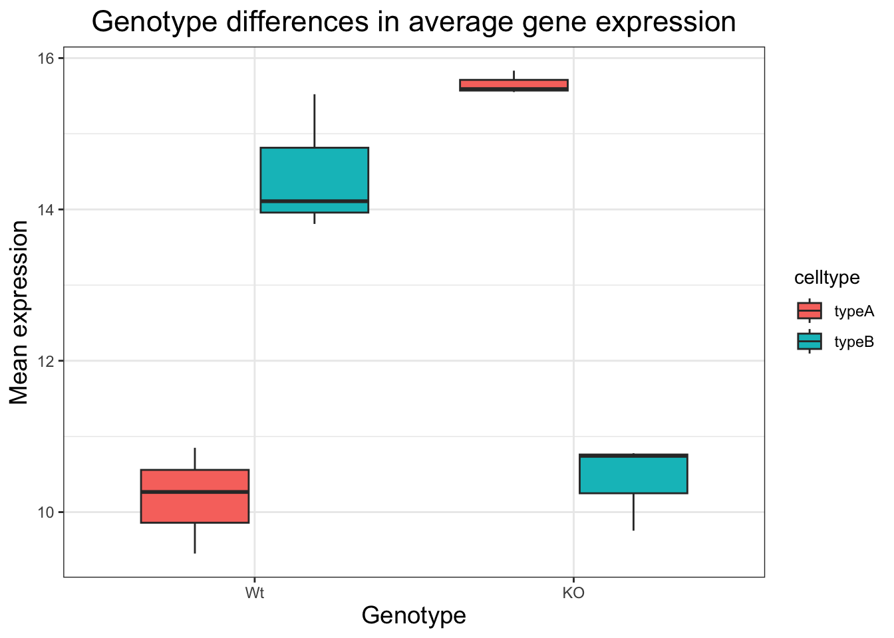
You can color the boxplot differently by using some specific layers:
1. Add a new layer `scale_color_manual(values=c(“purple”,“orange”))`.
- Do you observe a change?
2. Replace `scale_color_manual(values=c(“purple”,“orange”))` with `scale_fill_manual(values=c(“purple”,“orange”))`.
Do you observe a change?
In the scatterplot we drew in class, add a new layer `scale_color_manual(values=c(“purple”,“orange”))`, do you observe a difference?
What do you think is the difference between `scale_color_manual()` and `scale_fill_manual()`?
3. Back in your boxplot code, change the colors in the `scale_fill_manual()` layer to be your 2 favorite colors.
- Are there any colors that you tried that did not work?
Solution
ggplot(new_metadata) +
geom_boxplot(aes(x = genotype, y = samplemeans, fill = celltype)) +
ggtitle("Genotype differences in average gene expression") +
xlab("Genotype") +
ylab("Mean expression") +
theme_bw() +
theme(axis.title = element_text(size = rel(1.25))) +
theme(plot.title=element_text(hjust = 0.5, size = rel(1.5))) +
#We can also use hex color values to choose colors
scale_fill_manual(values=c("#F67280", "#355C7D"))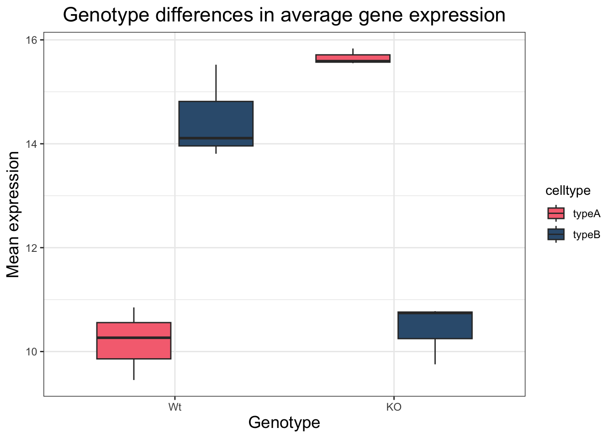
*The materials in this lesson have been adapted from work created by the (HBC)\](http://bioinformatics.sph.harvard.edu/) and Data Carpentry (http://datacarpentry.org/). These are open access materials distributed under the terms of the [Creative Commons Attribution license](https://creativecommons.org/licenses/by/4.0/) (CC BY 4.0), which permits unrestricted use, distribution, and reproduction in any medium, provided the original author and source are credited.*